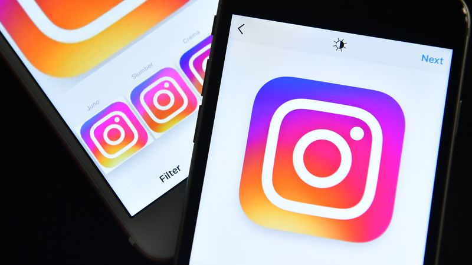

The word Instagram is a portmanteau of instant camera and telegram.On March 5, 2010, Systrom closed a $500,000 seed funding round with Baseline Ventures and Andreessen Horowitz while working on Burbn. Josh Riedel joined the company in October as Community Manager, Shayne Sweeney joined in November as an engineer, and Jessica Zollman joined as a Community Evangelist in August 2011.Kevin Systrom posted the first photo to Instagram on July 16, 2010. The photo shows a dog in Mexico and Systrom's girlfriend's foot: the photo has been enhanced using Instagram's X-PRO2 filter.On October 6, 2010, the Instagram iOS app was officially released through the App Store.
In February 2011, it was reported that Instagram had raised 7 million dollar in Series A funding from a variety of investors, including Benchmark Capital, Jack Dorsey, Chris Sacca (through Capital fund), and Adam D'Angelo. The deal valued Instagram at around $20 million .On April 3, 2012, Instagram was released for Android phones, and it was downloaded more than one milion times in less than one day. In March 2012, The Wall Street Journal reported that Instagram was raising a new round of financing that would value the company at $500 million, details that were confirmed the following month, when Instagram raised $50 million from venture capitalists with a $500 million valuation. The same month, Facebook bought Instagram for $1 billion in cash and stock, with a plan to keep the company independently managed. Britain's Office of Fair Trading approved the deal on August 14, 2012, and on August 22, 2012, the Federal Trade Commission in the U.S. closed its investigation, allowing the deal to proceed.] On September 6, 2012, the deal between Instagram and Facebook was officially closed.In November 2012, Instagram launched website profiles, allowing anyone to see users' feeds from their web browsers. However, the website interface was limited in functionality, with notable omissions including the lack of a search bar, a news feed, and the ability to upload photos. In February 2013, the website was updated to offer a news feed, and in June 2015, the website was redesigned to offer bigger photos.
On October 22, 2013, during the Nokia World event held in Abu Dhabi, Systrom confirmed the upcoming release of the official Instagram app for Windows Phone,after pressure from Nokia and the public to develop an app for the platform. The app was released as a beta version on November 21, 2013, and was lacking the ability to record and upload video, though an Instagram spokesperson stated that “We're not finished, and our team will continue developing the Windows Phone app to keep releasing features and bringing you the best Instagram possible”. In April 2016, Instagram upgraded the app to Windows 10 Mobile, adding support for video and direct messages, followed by later updates in October 2016 that extended the app to Windows 10 personal computers and tablets.
The Android app has received two major exclusive updates. The first, introduced in March 2014, cut the size of the app by half and added significant improvements to performance and responsiveness on a wide variety of Android devices. The Verge wrote that the development team had tested the app on devices not for sale in the United States, particularly low-end models like Samsung Galaxy Y, in an effort to improve the app for its userbase located outside the U.S.
Engineering manager Philip McAllister told The Verge that "More than 60% of our users are outside the US, and Android covers roughly half of total Instagram users". The second update, introduced in April 2017, added an offline mode, in which content previously loaded in the news feed is available without an Internet connection, and users can comment, like, save media, and unfollow users, all of which will take effect once the user goes back online. At the time of the announcement, it was reported that 80% of Instagram's 600 million users are located outside the U.S., and while the aforementioned functionality was live at announcement, Instagram also announced its intention to make more features available offline “in the following months”, and that they were “exploring an iOS version”.